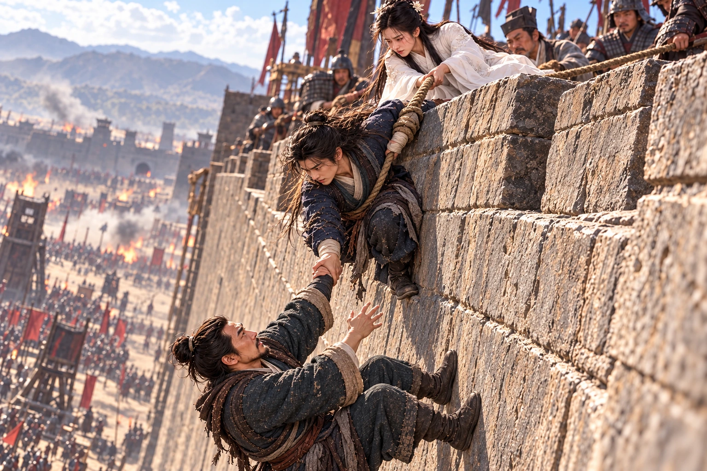
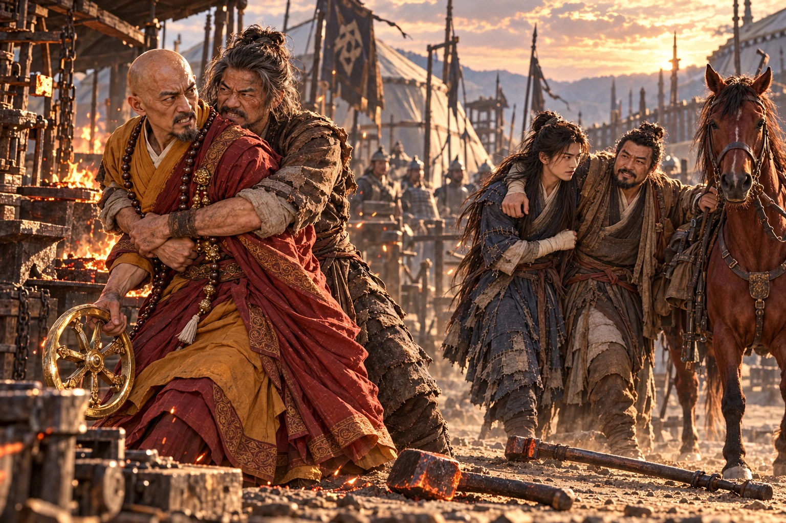
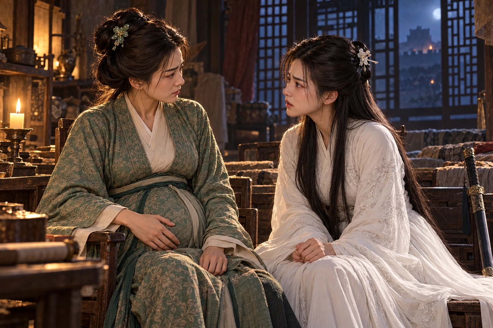
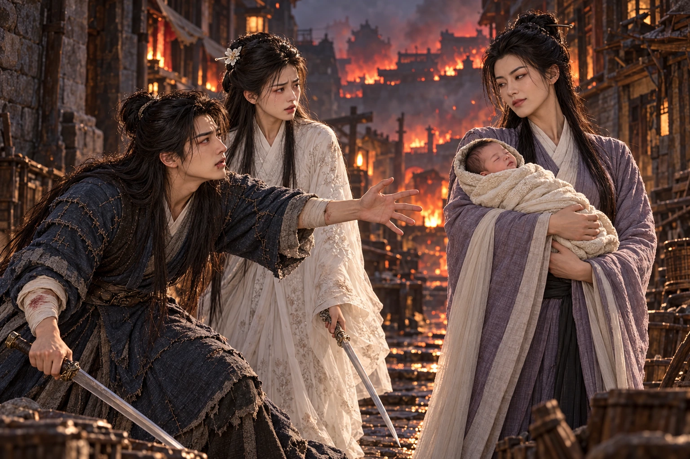
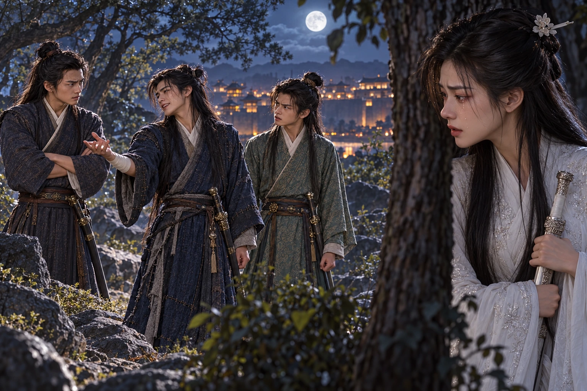

Tiga hari setelah meninggalkan lembah, melihat Xiangyang dari sela gerobak pengungsi. Asap dapur bercampur debu di atas tembok. Seorang anak tidur di atas karung, sementara ibunya berjalan dengan satu sandal. Dani menyingkirkan batu dari roda gerobak mereka; ketika menegakkan tubuh, nyeri tipis menyusuri dadanya. Lima belas hari tersisa, jika hitungan benar.
menahan sikunya. “Jangan mengangkat yang berat. Lukamu belum sembuh benar.”
“Kalau Bibi melarangku menolong seorang ibu, nanti ia mengira aku hanya pandai membawa pedang untuk menghias pinggang.” Dani tersenyum, lalu merendahkan suara. “Aku masih sanggup berjalan. Jangan memandangku seolah aku akan pecah.”
“Aku memandangmu karena aku ingin memandangmu,” jawab Xiaolongnü. Tangannya tetap di sana.
datang sendiri ke gerbang setelah menerima kabar penjaga. Sebelum Dani selesai memberi hormat, kedua bahunya sudah digenggam erat.
“Kau sudah kembali. Baguslah, Dani. mencemaskan lukamu.” Guo Jing memandang Xiaolongnü dan mengatupkan tangan. “Nona Long, terima kasih telah membawanya kemari. Kalian pasti lelah.”
Sepanjang jalan Dani telah membayangkan bagaimana menyembunyikan maksud kedatangannya. Namun sambutan tanpa curiga itu membuat senyum yang disiapkannya terasa kaku. Guo Jing mengambil buntalannya, lalu merangkul bahunya; Xiaolongnü berjalan di sisi kanan Dani. Kehangatan tangan sang paman sama seperti dahulu, ketika Dani masih seorang anak yang dibawa pulang.
Di kediaman Guo, Huang Rong menyambut dari kursi dekat jendela. Kandungannya sudah besar. Ia memeriksa wajah Dani, kemudian mempersilakan Xiaolongnü duduk di sampingnya. Tidak ada teguran tentang hubungan guru dan murid itu; Dani tahu diam belum berarti restu, tetapi untuk sekali ini ia bersyukur tidak harus berkelahi hanya untuk duduk berdekatan.
yang kini berumur sepuluh tahun mengintip dari belakang kakaknya. “Kak Dani, apakah kali ini engkau tinggal lebih lama?”
“Kalau makanan di sini belum habis dimakan kedua kakak Wu, mungkin aku dapat dibujuk.”
“Orang baru datang sudah mencela orang lain,” kata . Ia meletakkan semangkuk air di dekat tangan Dani dengan bunyi terlalu keras. “Minumlah dahulu. Wajahmu pucat sekali.”
“Kalau setiap celaan mendapat semangkuk air, aku harus berhati-hati. Aku belum ingin tenggelam di rumahmu.”
Fu hampir tersenyum, lalu melihat Xiaolongnü merapikan lengan jubah Dani. Ia berpaling kepada kedua Wu. menanyakan keadaan benteng; buru-buru menyebut pasukan yang harus dihadapi. Luka lama mereka sudah menutup, tetapi persaingan itu masih mencari tempat untuk tumbuh. Dani mengenali keinginan mereka tampak berguna di depan Fu—keinginan yang kadang membuat orang melupakan siapa yang harus ditolong.
Sesudah makan, Dani mengikuti Guo Jing ke serambi. Ia menjaga wajahnya tetap tenang, seolah pulang hanya untuk mencari tempat beristirahat. Dendam yang dibawanya tidak boleh terbaca sebelum ia sendiri tahu apa yang sanggup dilakukannya.
“Kamarmu sudah disiapkan,” kata Guo Jing. “Bila masih ada yang diperlukan, mintalah. Jangan menanggung luka seorang diri hanya karena engkau merasa sudah dewasa.”
“Kalau Paman terus memperlakukanku seperti anak kecil, aku boleh meminta tambahan selimut tanpa ditertawakan, bukan?” menjawab dengan kelakar. Ia berhasil tersenyum, tetapi tidak sanggup lama-lama menatap mata pamannya.
Guo Jing menepuk bahunya. “Mintalah dua kalau satu belum cukup. Di rumah ini engkau tidak perlu berpura-pura kuat.” Dani menunduk merapikan ikat pinggang. Justru di hadapan orang yang berkata demikian ia sedang berpura-pura.
Kentongan di menara memutus percakapan. Seorang penjaga datang membawa kabar: pengungsi di luar gerbang terjebak di antara pasukan Mongol dan parit. Kehangatan wajah Guo Jing berganti ketegangan; orang-orang yang terlantar itu tidak mempunyai tembok lain untuk berlindung.
“Paman harus ke gerbang. Engkau beristirahatlah dahulu,” kata . Sebelum pergi ia masih menyuruh seorang pelayan menyiapkan air hangat untuk luka Dani.
Dani mengawasi punggungnya sampai menghilang di tikungan. muncul di ambang serambi, di tangannya. Dani mengambil Pedang Budiman dan mengikutinya. Ia belum mengucapkan sepatah pun tentang ; di luar tembok rakyat menjerit, dan kaki sang paman sudah berlari menuju mereka.
Pasukan Mongol mendesak rakyat ke depan, memaksa pemanah Xiangyang memilih antara membiarkan musuh mendekat atau membunuh orang yang hendak mereka lindungi. Guo Jing melarang panah dilepas ke kerumunan. Ia turun bersama pasukan kecil, membuka jalan bagi gerobak, lalu tertinggal ketika seorang tua jatuh di dekat parit.
Dari atas tembok, Dani melihat pamannya mengangkat orang itu ke pelana prajurit terakhir. Kuda berbalik menuju gerbang. Guo Jing sendiri harus mundur sambil menahan serangan; di kejauhan, mengawasinya dari sisi barisan pemanah.
melemparkan tali. Guo Jing sudah mencapainya ketika sebuah anak panah memutus tali di atas genggamannya. Ia menjejak batu tembok untuk mempertahankan tinggi tubuh. Panah berikutnya memaksanya berputar, dan sisa tumpuannya hilang.
Sesaat Dani hanya melihat leher yang terbuka dan tangan yang mencari pegangan. Kepala itulah harga obatnya. Ia tinggal diam, dan orang lain akan menyelesaikan perkara yang belum berani dipilihnya.
Lalu Guo Jing melihat ke atas. Tidak ada kecurigaan di wajahnya.
“Paman, tangkap tanganku!”
Dani melilitkan ujung tali pada lengan kirinya dan menjatuhkan tubuh melewati bibir tembok. Tangan kanannya menangkap pergelangan Guo Jing. Sentakan itu membakar bahunya; di atas, Zhu Ziliu mengerahkan tenaga, dibantu Xiaolongnü yang menahan tali agar tidak menggesek sudut batu. Keduanya terayun menghantam dinding sebelum berhasil mencapai bibir tembok.

Begitu mencapai puncak, Guo Jing meraih busur penjaga. Balasan panahnya mematahkan ancaman dari bawah dan membuat barisan terdepan mundur. Dani duduk terengah, lengan kirinya merah karena tali. Ia menatap tangan kanan yang baru saja menyelamatkan orang yang hendak dituntutnya.
Guo Jing berlutut di sisinya. “Bahumu bagaimana?”
“Masih menempel, Paman.” berusaha tersenyum. “Tetapi lain kali, tolong pilih tembok yang lebih rendah.”
Guo Jing menekan lengannya dengan hati-hati. “Paman berutang nyawa kepadamu.”
“Mengapa Paman turun untuk seorang yang bahkan tidak Paman kenal? Kalau Paman mati, siapa yang menjaga kota?”
“Itulah sebabnya aku harus berhati-hati.” memandang gerbang yang sedang ditutup. “Tetapi orang-orang itu datang karena percaya kita akan melindungi mereka. Bila pada saat sulit kita membiarkan mereka dibantai, untuk siapa kota ini kita pertahankan?”
Dani tidak dapat menjawab. Ia datang membawa dendam yang disembunyikan, tetapi setiap kali kesempatan terbuka, kebaikan Guo Jing menghalangi tangannya. membalut lengannya tanpa berbicara. Ketika Dani menoleh, ia melihat rasa takut, bukan celaan, pada wajah perempuan itu.
Malamnya, kegembiraan karena selamat cepat berubah menjadi persaingan. Dari jalan taman, Dani dan Xiaolongnü mendengar Fu berkata bahwa keberanian seharusnya dibuktikan kepada musuh, bukan dengan saling berkelahi. berjanji akan melakukan sesuatu yang membuatnya bangga. bertanya apakah Fu akan berhenti membandingkan mereka setelah itu. Fu, yang lelah didesak memilih, menjawab terlalu cepat bahwa orang berjasa tentu lebih patut dihargai.
“Kalau aku menjadi Nona Guo, aku akan menyuruh keduanya tidur,” kata Xiaolongnü setelah mereka berlalu. “Besok orang yang kurang tidur lebih mudah terluka.”
Dani tertawa pelan. “Bibi akan membuat dua orang kehilangan alasan untuk menjadi pahlawan.”
“Aku tidak menyuruhmu menjadi pahlawan.” Ia menyentuh bekas tali pada lengannya. “Aku hanya ingin engkau tetap hidup.”
“Aku pun ingin begitu.” Dani meraih tangan itu dan mengecup jemarinya. “Kalau umurku panjang, Bibi harus bersabar. Aku masih mempunyai banyak ucapan yang akan membuatmu jengkel.”
Xiaolongnü menyandarkan kepala pada bahunya. “Ucapkan saja. Aku akan mendengarnya.”
Pagi berikutnya, dua pedang dikirim dari perkemahan Mongol bersama surat . Kedua Wu telah menyelinap hendak menyerang dan tertangkap. Undangan untuk menjemput mereka memakai bahasa sopan; mata Guo Jing mengeras ketika membacanya. Fu berdiri di dekat ibunya dengan bibir pucat.
“Mereka pergi karena ucapanku,” katanya akhirnya. “Tetapi aku tidak menyuruh mereka masuk sendirian.”
“Kau tidak memegang pedang mereka,” kata . “Namun jangan berpura-pura tidak mengetahui mengapa mereka ingin terlihat gagah.”
Guo Jing tidak menunggu pertengkaran itu selesai. menawarkan diri menemani. Ia mengenal perkemahan dan para petarung di dalamnya. Huang Rong menerima tawaran tersebut, lalu meminta Xiaolongnü tetap menjaga rumah. Permintaan itu masuk akal bagi seorang perempuan yang hampir melahirkan, tetapi Dani juga menangkap kehati-hatian di baliknya: Bibi Guo masih ingin mengetahui apa yang dibawanya pulang selain luka.
“Kalau aku terlambat, jangan mengira aku sedang berjamu,” kata Dani kepada Xiaolongnü di pintu. “Aku sudah tahu makanan mereka. Masakan di sini lebih baik.”
Xiaolongnü tidak tersenyum. “Kembalilah dengan Paman Guo. Setelah itu, kita bicarakan obatmu.”
Ia berkata demikian agar tidak meminta Dani memilih di depan orang lain. Dani memahami kebaikan itu dan justru merasa lebih bersalah.
Di tenda Kublai, kedua Wu dilepaskan sesuai janji setelah tiba. Guo Jing memerintahkan mereka pulang. Dani menunggu sampai keduanya melewati penjagaan, sementara Kublai menghidangkan minuman dan menawarkan kehormatan kepada tamunya. Putra Tolui itu mengingat hubungan lama ayahnya dengan Guo Jing, lalu mengarahkan percakapan kepada kelemahan istana Song.
“Paman mengetahui para menterinya lebih baik daripada aku,” kata Kublai. “Mengapa seorang dengan kemampuan Paman harus binasa untuk orang-orang semacam itu?”
“Aku orang Han, dan Xiangyang adalah benteng negeri Song,” jawab Guo Jing. “Tetapi yang kujaga bukan nama para menteri. Aku menjaga rakyat agar tidak hidup sebagai orang taklukan. Keburukan istana kami tidak memberi pasukanmu hak untuk membakar rumah mereka.”
“Bila negeri disatukan, perang akan berakhir.”
“Kalau perdamaian yang kauinginkan, mulailah dengan menarik tentaranya.” Guo Jing meletakkan cawan yang belum diminum. “Rakyat di depan gerbang kemarin bukan tentara. Jangan menyebut mereka orang yang hendak kauselamatkan.”
Senyum Kublai bertahan, tetapi di sisi tenda Jinlun sudah bangkit. Dani merasakan perubahan itu sebelum pintu ditutup. Ia telah duduk di antara mereka sebagai tamu beberapa hari lalu; sekarang ia tahu persis betapa sedikit jarak antara sebuah undangan dan perangkap.
“Anak muda,” kata Jinlun, “jalan keluar ada di belakangmu. Bukankah engkau masih mempunyai urusan sendiri dengan tamu kami?”
Dani memandang Guo Jing. Pamannya tidak bertanya tentang maksud ucapan tersebut; ia hanya menggeser tubuh, menempatkan Dani lebih jauh dari roda di tangan . Gerakan kecil itu membuat wajah Dani panas.
“Paman Guo datang menjemput muridnya. Aku datang bersamanya,” jawab Dani, menutupi gejolak hatinya dengan senyum miring. “Kalau kalian hendak menahannya, tentu aku pun harus kalian hadapi.”
Ia menendang kaki meja ke jalur Jinlun. Cawan pecah, tirai tersibak, dan Guo Jing menerjang celah yang dibukanya. memaksa pengepung mundur, tetapi begitu mereka mencapai lapangan, dan datang dari sisi berbeda. menutup jalan ke kuda.
mampu membaca satu serangan, lalu serangan berikutnya datang sebelum napasnya kembali. Racun menusuk dadanya ketika ia memikirkan yang menunggu. Kakinya tersendat. Guo Jing berbalik melindunginya; pukulan Jinlun menghantam tubuh sang paman pada saat pertahanannya terbuka.
“Paman Guo!” Dani menahan tubuh yang hampir jatuh itu. Darah merembes di sudut mulut Guo Jing. Ia masih berusaha menyuruh Dani lari sendiri.
Kini kesempatan itu sungguh ada. Dani dapat melepaskan tubuhnya, membiarkan pengepung merampasnya, lalu pulang dengan kepala dan alasan bahwa ia tidak membunuh. Jari-jarinya malah mencengkeram jubah Guo Jing lebih erat. Aku belum tahu seluruh perkara Ayah, pikirnya. Tetapi aku tahu apa yang sedang kulakukan sekarang.
Ia menyampirkan lengan Guo Jing ke bahunya dan mengangkat . “Paman pernah membawaku pulang. Sekarang giliranku.”
Roda menyayat lengan kanan Dani. Ia mundur sampai tumitnya menyentuh kayu gerobak; di belakangnya tidak ada ruang lagi. Ketika Jinlun hendak menutup jarak, palu membara menghantam tanah di antara mereka.
berdiri dengan di tangan kiri. Rambutnya berdebu, bekas luka di pipinya belum hilang. Sesudah rombongan Dani meninggalkan bengkel, ia dipaksa tentara memperbaiki senjata di kamp. Keributan tadi membawanya keluar dari tempat penempaan.
“Bawa dia ke kuda,” kata Feng. “Jangan berdiri menungguku!”
“Senior, kita keluar bersama!”
Feng menggeleng. Ia melihat yang tak sanggup berdiri dan memahami apa yang akan hilang dari Xiangyang bila orang itu mati. “Kakiku tidak akan memenangkan perlombaan dengan mereka. Engkau masih dapat berlari.”
Palu dan penyangga memaksa dua lawan berpencar. Ketika Jinlun menyerang lagi, Feng menahan pukulan dengan besi panas, lalu menjatuhkan alatnya untuk memeluk tubuh lawan. Jinlun berusaha melepaskan diri. Feng bertahan meskipun pukulan mulai menghantam punggungnya.

Dani mencapai kuda merah Guo Jing. Dengan kedua lengan gemetar ia menaikkan pamannya, lalu memanjat di belakangnya. Ia sempat menoleh sekali. Feng masih menahan Jinlun; wajahnya menghadap ke arah mereka, dan mulutnya bergerak menyuruh pergi. Tidak ada kesempatan untuk memberi hormat seperti di bengkel.
Kuda menerobos celah penjagaan. Ketika roda kembali mendesing dari belakang, Dani tahu tangan Feng telah terlepas. Ia menangkis miring, merasakan besi mengguncang tulangnya, lalu membungkuk melindungi Guo Jing. Palu yang ditinggalkan itu tidak akan diangkat pemiliknya lagi.
Di dekat gerbang Xiangyang, orang-orang berlari menyongsong mereka. Dani masih mengayunkan pedang ke arah bayangan sebelum mengenali pakaian penjaga. Ia berusaha mengatakan bahwa Guo Jing harus ditolong dahulu. Kata-katanya habis di tengah napas; keduanya jatuh pingsan ke dalam tangan yang menahan mereka dari pelana.
Ketika Dani membuka mata malam itu, Xiaolongnü sedang mengganti kain di lengan kanannya. Ia mencoba bangkit dan langsung ditahan.
“Paman Guo masih hidup,” katanya sebelum bertanya. “Lukanya sedang dirawat. Engkau sudah pulang.”
“Senior Feng tidak pulang.” Suara Dani serak. “Aku menyuruhnya ikut, tetapi aku sendiri yang pergi.”
meletakkan kain. “Kalau engkau tinggal, pertolongannya akan sia-sia.”
“Aku tahu.” Dani menatap atap ranjang. “Mengetahui itu tidak membuatku sanggup melihat wajahnya sekali lagi.”
Xiaolongnü tidak mencari nasihat lain. Ia duduk dekat dan membiarkan Dani menggenggam tangannya. Beberapa saat kemudian, masuk membawa obat. Ia sudah mendengar penuturan suaminya sebelum Guo Jing kembali kehilangan kesadaran. Dani melihat rasa terima kasih yang tidak lagi disembunyikan, dan sulit menahannya lebih lama daripada tatapan musuh di kamp.
“Aku membuat Paman terluka,” katanya. “Ia berbalik karena aku tidak sanggup menghindar.”
“Dan engkau membawanya kembali.” Huang Rong meletakkan obat. “Jangan mengambil seluruh kesalahan, kemudian menolak mengakui satu pun pertolonganmu sendiri.”
Setelah Dani tertidur, Huang Rong mengajak Xiaolongnü ke kamar sebelah. Pintu dibiarkan sedikit terbuka agar suara dari ranjang Dani masih terdengar. Xiaolongnü baru duduk ketika Huang Rong bertanya, tanpa senyum yang biasa membungkus siasatnya.
“Nona Long, apakah engkau pernah berniat membunuh suamiku?”
Wajah Xiaolongnü menegang. “Mengapa engkau menanyakan itu?”
“Karena setiap kali Dani menyelamatkannya, engkau tampak seperti kehilangan sesuatu. Aku melihatnya di dekat tembok, lalu di sisi ranjang tadi.” Huang Rong menahan pandangannya. “Apa yang harus dibayar Dani supaya suamiku tetap hidup?”
Xiaolongnü memandang celah pintu. Ia dapat melawan tuduhan tentang dirinya, tetapi pertanyaan itu menyebut dengan tepat ketakutan yang sejak lembah tidak pernah meninggalkannya.
“Empat belas hari,” katanya. “Itu yang tersisa sekarang. Orang-orang menyuruhnya beristirahat, seolah ia hanya perlu menunggu luka menutup.”
Huang Rong tegak. “Empat belas hari untuk apa?”
Xiaolongnü menceritakan duri , pil yang diberikan kepadanya, dan yang ditahan . Ia tidak menyamarkan tuntutan kepala . Ketika menyebut pil utuh yang telah menyelamatkannya, suaranya melemah. Ia hidup karena Dani memberikan keselamatannya sendiri, lalu terpaksa menyaksikan Dani menghabiskan waktu yang tersisa untuk orang lain.
“Aku pernah berpikir akan mengambil kepala itu bila ia tidak sanggup,” katanya. “Tetapi ia justru membawa suamimu pulang dengan tubuhnya sendiri. Aku tidak mengerti bagaimana menyelamatkan orang yang selalu meletakkan nyawanya di belakang nyawa orang lain.”
Huang Rong diam cukup lama. Tadinya ia mengira sedang memeriksa dendam seorang anak terhadap orang tua yang belum dipercayainya. Sekarang ia menyadari bahwa setiap pertolongan Dani juga menjauhkan dirinya dari obat. Perhitungan yang biasanya memberinya jalan keluar berhenti di satu kenyataan: suaminya hidup karena pemuda itu memilih menanggung kematian.
“Dani menyimpan banyak kepahitan terhadap keluarga kami,” kata Huang Rong. “Namun dalam bahaya ia tetap menolong suamiku. Aku tidak akan memakai kecurigaan untuk mengecilkan apa yang telah dilakukannya.”
“Aku tidak membutuhkan alasan agar ia membenci kalian. Aku membutuhkan obatnya.”
menunduk pada perutnya, kemudian mengangkat wajah dengan keputusan yang membuat berhenti bernapas sejenak.
“Besok, setelah kita melewati serangan berikutnya, engkau boleh membawa kepalaku ke lembah.”
Xiaolongnü mengira salah mendengar. “Qiu meminta kepala suamimu.”
“Namaku pun ada dalam permusuhannya. Aku akan meninggalkan surat. Bawa kepalaku sebagai pengganti dan mintalah obat itu.” Huang Rong berhenti sebentar. “Aku tidak dapat menjamin ia menerima. Tetapi aku tidak akan menawarkan nyawa suamiku setelah Dani menyelamatkannya.”
“Engkau akan mati.”
“Engkau pun bersedia mati untuk Dani, bukan?”
“Kalau itu dapat membuatnya hidup, aku tidak takut.”
“Maka engkau sudah mengenal sebagian hatiku.” Huang Rong menyentuh perutnya. “Seorang ibu pun mencintai anaknya demikian. Aku ingin suamiku dan anak-anakku selamat. Dani telah menjaga mereka berkali-kali. Bagaimana mungkin aku hanya pandai meminta pengorbanannya?”
Xiaolongnü memandangi perempuan itu. Kepala yang sejak lembah dipikirkannya sebagai jalan keluar sekarang menjadi wajah seseorang yang sedang menahan sakit sambil memikirkan keluarganya. Ia tidak menjawab. Untuk pertama kalinya, memperoleh persetujuan tidak membuat pekerjaan itu terasa lebih mudah.

“Jangan bicarakan kepada dahulu,” kata Huang Rong. “Ia akan menolak sebelum kita dapat memikirkan jalan lain. Besok bantulah menjaga rumah ini. Jika ada cara yang lebih baik, kita ambil. Bila tidak, perkataanku tetap berlaku.”
Menjelang petang esoknya, Huang Rong dan Xiaolongnü sedang mengatur penjagaan ketika Fu masuk dengan napas putus-putus; kedua Wu baru saja meninggalkan rumah untuk menyelesaikan persaingan mereka. Kali ini salah seorang harus menyerah selamanya, atau mati. yang baru tiba di kota sudah menyusul, tetapi belum menemukan mereka.
Huang Rong memejamkan mata menahan nyeri. “Ayahmu hampir mati menjemput mereka. Apakah belum cukup seorang yang tidak kembali?”
Fu menunduk, lalu pertahanannya pecah menjadi kemarahan. “Aku sudah menyuruh mereka berhenti! Mereka terus meminta jawaban, seolah aku harus membelah diri agar keduanya puas.”
“Maka jangan memberi mereka harapan hanya supaya engkau tidak perlu memilih.”
Fu tidak membalas. Ia malu karena ibunya benar, dan semakin malu karena mendengarnya. Ketika perempuan berpakaian putih itu pergi tanpa mencela, Fu malah merasa lebih kecil. Ia ingin Dani mengetahui bahwa dirinya bukan penyebab semua malapetaka; pada saat yang sama, ia takut mendengar apa yang akan dikatakan Dani.
Sepanjang hari itu, Dani hanya dapat berjalan sebentar sebelum harus duduk lagi. Buntalan ibunya diletakkan di bawah ranjang, dalam jangkauan. Dari kamar sebelah terdengar napas berat . Dani memejamkan mata; suara itu mengingatkannya pada tubuh yang melindunginya dari pukulan . Ia tetap menyimpan perkara ayahnya dalam hati.
Serangan datang menjelang malam. Api muncul di sisi atap, disusul bunyi roda memecahkan genting. bersama penjaga menahan para penyerbu di halaman, sementara Jinlun mencari jalan ke kamar Guo Jing. Dari tempat tidur, Guo Jing mencoba bangkit. mendorongnya kembali dan mengambil tongkat.
“Kalau engkau memaksa bertarung, lukamu akan terbuka,” katanya. “Biarkan aku menjaga pintu.”
“Rong’er, keadaanmu—”
“Aku mengetahui keadaanku. Engkau juga harus mengetahui keadaanmu.” Huang Rong menatapnya sampai Guo Jing melepaskan tepi ranjang. Keduanya takut kehilangan, tetapi tidak ada waktu untuk saling meminta bersembunyi.
Dani melihat telapak Huang Rong bergetar di batang tongkat. Ia menarik dan bergerak ke pintu. “Bibi Guo, bawalah Paman lewat belakang. Aku akan membuat biksu itu sibuk.”
“Dani, jangan bertindak gegabah,” kata Guo Jing.
“Paman baru saja melarang orang yang paling cakap melakukannya.” Senyum Dani muncul sebentar. “Kali ini izinkan aku memakai kecakapan itu untuk sesuatu yang berguna.”
Di halaman, Xiaolongnü menahan Jinlun cukup lama untuk memberi kesempatan memindahkan Guo Jing. Dani memakaikan jubah luar dan tutup kepala pamannya pada gulungan selimut di atas bantal panjang. Dari jauh, di antara asap, bentuk itu menyerupai orang yang dipanggul. Ia berbisik kepada Xiaolongnü sebelum naik ke atap rendah: jaga keluarga, dan jangan percaya setiap teriakan musuh.
“Paman Guo, tundukkan kepala!” serunya.
Jinlun melihat sosok berpakaian Guo Jing di punggungnya dan segera mengejar. Dani memilih lorong sempit, berganti arah di balik dinding, memaksa lawan yang lebih kuat itu mengikuti jejak yang terputus-putus. Setiap lompatan membuka nyeri di lengan. Ia tidak berusaha memenangkan perlombaan; ia hanya memerlukan cukup waktu agar pintu belakang kosong.
Ketika roda merobek gulungan yang dilemparkannya, kapas berhamburan di depan Jinlun. Dani sudah mencapai sisi tembok berikutnya. Tawa yang dilontarkannya terdengar berani; lututnya sendiri hampir menyerah saat ia mendarat.
Jinlun tidak melanjutkan pengejaran membabi buta. Ia kembali menuju kebakaran sambil menyerukan bahwa Dani telah tertangkap. Dani mendengar tipuan itu, lalu melihat bayangan putih bergerak dari arah rumah. Ia segera berlari memotong jalan.
“Bibi, aku di sini!”
berbalik. Di lengan kirinya terbaring bayi dalam bedung. Dani sempat melihat wajah merah kecil sebelum roda memaksa mereka merapatkan pertahanan. Pedang Hati Murni masih menyambungkan gerak keduanya, tetapi Dani terluka dan satu lengan Xiaolongnü harus menyangga kepala bayi.
“Putra ,” katanya di sela benturan. “Ia lahir ketika engkau pergi. Nona Guo menyebutnya . Ibunya memintaku membawanya keluar sementara ia menolong suaminya.”
Guo Polu menangis. Tangis itu mengacaukan ketenangan Xiaolongnü lebih daripada senjata di depannya. Dani menggeser serangan menjauhi bedung, sedangkan tangan bersarung Xiaolongnü menepis roda dari sisi, cukup untuk membuka jalan turun ke gang.
Di balik dinding rendah mereka memperoleh beberapa tarikan napas. Xiaolongnü menyerahkan bayi kepada Dani, lalu berkata cepat, “Bawa dia ke lembah dengan kuda . Aku akan menahan biksu itu.”
Dani menatapnya. “Untuk apa Polu dibawa ke sana?”
“Supaya memberikan obat. Bibi Guo mengatakan kasih seorang ibu kepada anaknya sama besarnya dengan kasihku kepadamu. Ia tentu akan melakukan apa pun untuk mengambil putranya kembali. Kita tidak perlu melukai bayi ini.”
“Tetapi kita menyerahkannya kepada orang yang sanggup memaksaku membunuh untuk mendapat obat!” Suara Dani naik. “Bibi, bayi ini tidak pernah berutang nyawa kepadaku.”
Xiaolongnü tersentak. Sejak mendengar tawaran Huang Rong, ia berusaha menemukan pengganti yang tidak mengharuskan siapa pun kehilangan kepala. Ia melihat bayi sebagai alasan agar orang-orang berhenti menolak, belum membayangkan ketakutan yang harus ditanggung ibunya atau kekejaman yang mungkin dilakukan Qiu.
“Aku tidak hendak membunuhnya,” katanya. “Aku hanya ingin engkau sembuh.”
“Aku tahu.” menahan suaranya, tetapi tidak mengendurkan pelukan pada bayi. “Namun kalau obatku harus dibeli dengan menyerahkan anak ini, aku tidak mau. Bahkan bila aku mati, jangan lakukan itu untukku.”
Wajah Xiaolongnü memucat. “Engkau mengatakannya seolah kematianmu hanya menyangkut dirimu.”
Dani terdiam. Ucapan itu mengenai tempat yang selama ini berusaha dihindarinya. Ia melihat tangan Xiaolongnü gemetar pada gagang pedang dan mengerti bahwa keberaniannya sendiri telah menjadi penderitaan orang yang mencintainya.
“Aku ingin hidup bersama Bibi,” katanya akhirnya. “Aku ingin sekali. Tetapi kalau aku merampas anak dari ibunya, Bibi akan membawa pulang orang yang lain.”
Tangis Polu mengecil. Xiaolongnü menunduk, merapikan kain yang terlepas dari pipinya. Ia masih takut, dan belum mengetahui jalan keluar lain. Namun kali ini ia melihat seorang anak, bukan sekadar kesempatan menyelamatkan Dani.
“Kita kembalikan kepada ibunya,” katanya. “Sesudah itu, jangan menyuruhku berhenti mencari obat.”
“Aku akan ikut mencarinya.”
Mereka baru berbalik menuju jalan pulang ketika melompati dinding. Dani memutar tubuh untuk melindungi ; hantaman pada bahunya membuat pelukannya goyah. meraih bedung, tetapi sesosok perempuan sudah menyusup dari sisi gang dan mengambil bayi itu lebih dahulu.
mundur dengan Polu aman di lengannya. Busana ungunya terkena debu, wajahnya justru tenang. Ia telah mengikuti keributan dan mengenali adik seperguruannya di tengah kepungan.
“Adik Long, rupanya hidup di luar makam memberimu banyak pelajaran,” katanya lembut. “Bahkan seorang anak sudah kaudapatkan.”
“Itu bukan anakku. Kembalikan dia.”
“Kalau begitu, tentu engkau tidak keberatan aku menjaganya sebentar.” Li Mochou memandang Dani yang segera maju. “Tetapi pemuda ini tampak terlalu cemas untuk seorang asing.”

Ia berbalik sebelum Jinlun mencapai mereka. Dani mengejar melalui jalan menuju gerbang; Xiaolongnü tertahan sesaat untuk menghindari roda, lalu mengikuti. Penyangkalannya tenggelam dalam bunyi kentongan. Di lengan perempuan yang membawa racun itu, bayi terus menangis mencari kehangatan yang dikenalnya.
Di dekat gerbang, dan anak buahnya menutup jalan Jinlun dengan tombak serta panah. Li Mochou telah menyelinap lewat sela rombongan yang dipindahkan dari kebakaran. Dani mengejarnya keluar, sedangkan Xiaolongnü mengambil kuda merah atas bantuan Lu. Ia kehilangan arah di percabangan dan harus memutar sebelum menemukan jejak mereka lagi.
menyusuri tangis bayi sampai ke cekungan berbatu. Di sana suara benturan pedang menghentikannya. Kedua Wu sedang bertarung di depan rumpun pohon; masing-masing mengenal gerak saudaranya dengan begitu baik sehingga setiap serangan diarahkan ke tempat yang biasanya dipercayakan kepada seorang kawan.
keluar dari semak dan menarik lengan Dani. Lelaki itu sudah mencoba memisahkan mereka, tetapi setiap kali ia menahan seorang, yang lain meneruskan serangan. Ia takut tangannya sendiri akan memberi kesempatan bagi salah satu putranya untuk membunuh.
“Dahulu engkau pernah membuat mereka berhenti,” katanya. “Sekarang mereka tidak mau mendengar ayahnya sendiri.”
Dani memandang darah pada bahu , lalu mendengar bayi menangis lagi dari balik batu. Ia tidak mempunyai waktu untuk membiarkan kedua bersaudara itu menyelesaikan kebodohan mereka.
“Jangan keluar dahulu, Paman Wu. Biarkan mereka marah kepadaku.”
Ia melangkah ke tengah sambil tertawa. “Kalian sungguh rajin. Rumah guru kalian terbakar, putranya diculik, tetapi kedua muridnya masih sempat mencari tempat sepi untuk saling menusuk.”
Pedang-pedang itu terhenti. lebih dahulu membantah, tetapi pertanyaannya tentang kebakaran membuat kemarahan Dani naik. Feng mati agar mereka dapat pulang; sekarang mereka memakai keselamatan itu untuk mencoba mati sekali lagi.
“Kalau ini masih tentang Fu, simpan pedang kalian,” katanya. “Paman dan sudah memperbarui pembicaraan perjodohan. Kali ini aku menerimanya.”
“Engkau mengulangi dusta lama!” Dunru menunjuknya dengan ujung pedang. “Kami mendengar sendiri penolakanmu di pertemuan pahlawan.”
“Karena itulah kukatakan kali ini.” Dani memaksakan senyum angkuh. “Sesudah aku membawa Paman pulang, kami berbicara lagi. Apakah kalian mengira semua orang harus menunggu sampai kalian selesai memilih siapa yang akan dikubur?”
Xiuwen mendekat ke sisi kakaknya. Dani melihat perubahan itu dan meneruskan, semakin berani karena tipuannya mulai bekerja.
“Fu lelah didesak kalian. Yang satu meminta ia berhenti membandingkan, yang lain berjanji melakukan sesuatu agar ia bangga. Kalian menagih jawaban seperti menagih utang.”
Kedua Wu saling memandang. Itu percakapan yang mereka kira hanya didengar Fu. Dani tidak menerangkan bahwa dirinya pernah berada di jalan taman. Ia membiarkan mereka membangun sendiri kesimpulan yang dikehendakinya.
“Ia menceritakannya kepadamu?” tanya Dunru.
“Kelak kami akan tinggal di satu rumah. Apa yang hendak disembunyikannya dariku?” mengangkat dagu. “Aku akan menikahi Fu. Kalau kalian masih ingin bertarung karena calon istriku, hadapilah aku bersama-sama.”
Di antara pepohonan, berhenti dengan kendali kuda di tangan. Ia tiba ketika Dani menyebut pembicaraan yang diperbarui, tidak mendengar permohonan . Yang didengarnya kemudian adalah suara Dani yang begitu dikenalnya sedang menggambarkan rumah bersama perempuan lain.
Ia tahu Dani pandai berdusta. Namun ia juga tahu menginginkan pernikahan itu, dan sesudah pulang dari kamp Dani telah memilih membela keluarga Guo meskipun obatnya sendiri terancam. Ketakutan yang pernah diucapkan Huang Rong kembali memperoleh bentuk: di sisi Fu, Dani akan diterima sebagai menantu, bukan dicela karena menikahi gurunya.
Xiaolongnü menunggu Dani menyebut namanya dan membatalkan semua itu. Sebaliknya, ia mendengar kelakar lain tentang calon mertua. Tangan yang menggenggam kendali mengendur. Ia menyangka Dani akhirnya menemukan kehidupan yang sebelumnya ia tolak.

Dani sempat merasa ada gerak di belakang pohon, tetapi pedang Xiuwen sudah datang. Ia menangkis dengan sarung agar tidak melukai, lalu menggeser arah serangan memakai dasar . maju membantu adiknya. Sekarang mereka melindungi satu sama lain, persis seperti yang diinginkan Dani.
“Dari mana engkau memperoleh ilmu itu?” seru Xiuwen.
“Tentu keluargaku yang akan datang tidak membiarkan menantunya tidak berbekal,” jawab Dani. Ia tahu siapa sebenarnya yang mengajarinya, tetapi sedang terlalu puas melihat siasatnya berhasil untuk memikirkan harga setiap kata.
Pertarungan pendek itu berakhir ketika Dani menjentik sisi pedang yang sudah menyimpang dan memaksa kedua Wu mundur. Napasnya sendiri terputus. Ia bukan sedang menunjukkan tenaga yang tak terbatas; satu putaran lagi mungkin akan membuat lukanya mengalahkannya lebih dahulu.
Dunru menurunkan pedang. memandangnya, dan rasa kehilangan yang sama membuat kemarahan mereka berubah arah. Sebelum keduanya sempat mengambil keputusan lebih buruk, Wu Santong maju merangkul mereka.
“Lihatlah ayah kalian,” katanya dengan suara bergetar. “Kalian boleh kecewa kepada siapa pun. Tetapi jangan meminta ayah mengubur anak yang dibunuh anaknya sendiri.”
Xiuwen berusaha membantah, lalu melihat air mata di wajah ayahnya. Dunru memegang pergelangan adiknya. Untuk pertama kalinya malam itu mereka menyadari bahwa pertarungan mereka mempunyai korban yang bahkan tidak membawa pedang.
Xiaolongnü sudah berbalik sebelum ketiganya berpelukan. Ia tidak ingin Dani harus mengucapkan penolakan langsung kepadanya. Di jalan, ia sempat berpikir menyerahkan kepada Fu dan memintanya merawat Dani. Akan tetapi, menggenggam sarungnya saja membuat dadanya sakit; ia belum sanggup melepaskan benda yang dibawa keluar dari lembah bersama itu.
Di dekat gerbang ia bertemu yang ikut mencari bayi. Ia menyampaikan tempat Dani berada dan menitipkan kuda merah agar Dani tidak perlu berjalan pulang. Pertanyaan tentang ke mana dirinya hendak pergi hanya dijawab dengan permintaan supaya Dani dijaga. Ia pergi dengan pedangnya, masih mencintai orang yang disangkanya telah memilih perempuan lain.
Tangis membawa Dani kembali menoleh. muncul dari balik batu dengan bayi di lengan. Ia telah mendengar sebagian pertengkaran dan tidak berniat membiarkan jalan pulangnya ditutup.
“Kalian memperebutkan perempuan yang tidak berada di sini,” katanya. “Sementara anak sekecil ini pun tidak kalian biarkan tidur.”
mengenal suara itu. Dendam lama menghapus kelembutan dari wajahnya; kedua putranya bergerak mengikuti sebelum sempat menjelaskan. Dani masuk dari samping, berusaha mencapai bedung, tetapi Li Mochou memutar tubuh sehingga bayi berada di antara mereka.
“Paman Wu, tahan serangan! Itu putra !”
Keraguan mereka memberi Li Mochou celah. Jarum Perak melesat dari balik lengan bajunya. Dunru terhuyung, Xiuwen jatuh berlutut. Wu Santong menarik kedua anaknya menjauhi garis serangan, sedangkan Li Mochou mundur ke jalur gelap dengan bayi masih digendongnya.
Dani hendak mengejar. Kemudian ia mendengar Wu Santong memanggil anak-anaknya, bukan dengan amarah tadi, melainkan suara yang nyaris tidak dikenali sebagai suara manusia yang sama. Kedua Wu sudah kesulitan menjawab.
“Adakah penawarnya?” tanya Wu Santong. “Dani, katakan engkau mempunyai obatnya!”
Dani berlutut. Ia pernah membaca petunjuk racun dalam kitab ; ia mengenali bahayanya, tetapi pengenalan bukan penawar. Li Mochou semakin jauh. Di hadapannya, dua orang yang baru saja ditolongnya berhenti saling membunuh kini mungkin akan mati bersama.
Wu Santong hendak mengisap racun dari luka putranya. Dani menahannya. Sang ayah meronta, memohon agar dibiarkan; ketika memandang wajahnya, Dani teringat betapa sedikit yang masih ia ingat dari wajah Kang. Andai ayahnya hidup, mungkinkah ia pun akan memohon seperti itu?
Ia Wu Santong sebelum lelaki itu sempat meneruskan. Kemudian Dani sendiri menunduk untuk mengisap darah beracun. Ia meludah, berpindah kepada saudara yang lain, lalu kembali lagi. Tindakan nekat itu tidak memberinya kepastian akan menyelamatkan keduanya; ia hanya berusaha membeli waktu dengan tubuh yang sudah keracunan.
Matanya mulai kabur. Ia teringat ucapannya kepada di gang: kematiannya tidak hanya menyangkut dirinya. Ia tidak merasa gagah. Ia takut tidak sempat menemuinya lagi, takut janji mencari obat bersama akan menjadi dusta yang tidak disengajanya.
“Bibi,” bisiknya, tanpa mengetahui bahwa perempuan itu telah pergi.
Dani sempat membuka totokan Wu Santong sebelum tubuhnya kehilangan tenaga. Sang ayah menyambutnya, memanggil namanya berkali-kali. Ketika Zhu Ziliu tiba bersama kuda merah dan beberapa penolong, kedua Wu masih bernapas. Racun belum selesai bekerja; mereka harus segera dibawa pulang.
Fajar berikutnya, Wu Santong membawa Dani memasuki kediaman tempat keluarga Guo berlindung setelah kebakaran. Ia berlutut di depan , lalu membungkuk kepada Guo Jing yang ditopang di kursi. Kedua putranya dibawa masuk untuk mendapat perawatan lanjutan.
“Kesalahan mereka adalah kesalahanku,” katanya. “Dani sudah menyelamatkan mereka dari pedang sendiri, kemudian menyerahkan tubuhnya kepada racun mereka. Aku tidak mempunyai muka untuk meminta ampun, tetapi aku harus memintanya.”
Guo Jing mengulurkan tangan agar ia bangkit. Huang Rong segera memeriksa Dani; kabar tentang membuat wajahnya pucat, namun tangannya tidak berhenti mengatur pertolongan. Ia tidak dapat mengambil kembali putranya dengan membiarkan pemuda di depannya mati.
Fu berdiri di ambang pintu. Ayahnya terluka, rumah mereka terbakar, adik bayinya hilang, dan kedua Wu kembali dibawa dalam keadaan hampir mati. Di antara semuanya ada , yang selalu mempunyai ucapan menyakitkan tetapi terus pulang membawa luka untuk keluarganya. Fu ingin marah karena ia membuat orang lain merasa berutang; keinginan itu membuatnya semakin malu.
“Aku tidak pernah meminta mereka bertarung sampai mati,” katanya pelan.
Tidak seorang pun menjawab. Fu mengambil air bersih dan menyingkirkan kain kotor dari sisi ranjang. Ia bekerja dengan gerakan terlalu cepat, menolak menangis di depan orang-orang yang sedang menolong.
Dani sadar sebentar ketika cahaya pagi mencapai lantai. Ia melihat menunggui, kemudian mencari warna putih di belakangnya.
“Bibi datang bersama kalian?”
Wu Santong menggenggam tangannya. “Nona Long mengirimkan kuda melalui Saudara Zhu. Aku belum bertemu dengannya. Jangan bangkit dahulu; kedua anakku pun masih dirawat.”
“Paman tidak perlu menjaga aku terus.” Dani mencoba tersenyum. “Nanti mereka mengira aku merebut ayahnya juga.”
Wu Santong tertawa sekali, patah oleh tangis. “Mereka masih mempunyai ayah karena engkau membuatku tidak kehilangan keduanya. Biarkan aku duduk di sini.”
Dani tidak mempunyai tenaga untuk menolak. tersandar dekat ranjang; buntalan ibunya telah diselamatkan dari kamar lama. Ketika membuka tangan, ia masih dapat menggerakkan kelima jarinya. Kedua lengannya ada, pamannya hidup, dan orang-orang yang dibawanya pulang masih diberi kesempatan untuk sembuh.
Enam hari telah berlalu sejak ditelannya. Menurut hitungan lama, masih ada dua belas hari; racun baru membuatnya tidak tahu lagi apakah hitungan itu dapat dipercaya. Ia datang ke Xiangyang dengan tuntutan sebuah kepala. Kini ia telah memilih bahwa kepala itu tidak akan diambilnya sebagai harga nyawa sendiri.
Pilihan tersebut tidak mengembalikan , tidak menemukan Polu, dan tidak mendatangkan ke sisi ranjang. Tetapi ketika memanggil namanya dari pintu, Dani tidak lagi memandang leher pamannya. Ia memandang wajahnya. Perkara ayahnya tetap tersimpan; hari itu ia hanya menggeser tubuh, memberi tempat bagi pamannya untuk duduk.